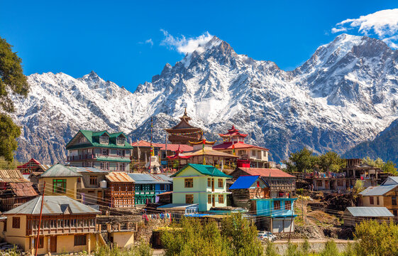
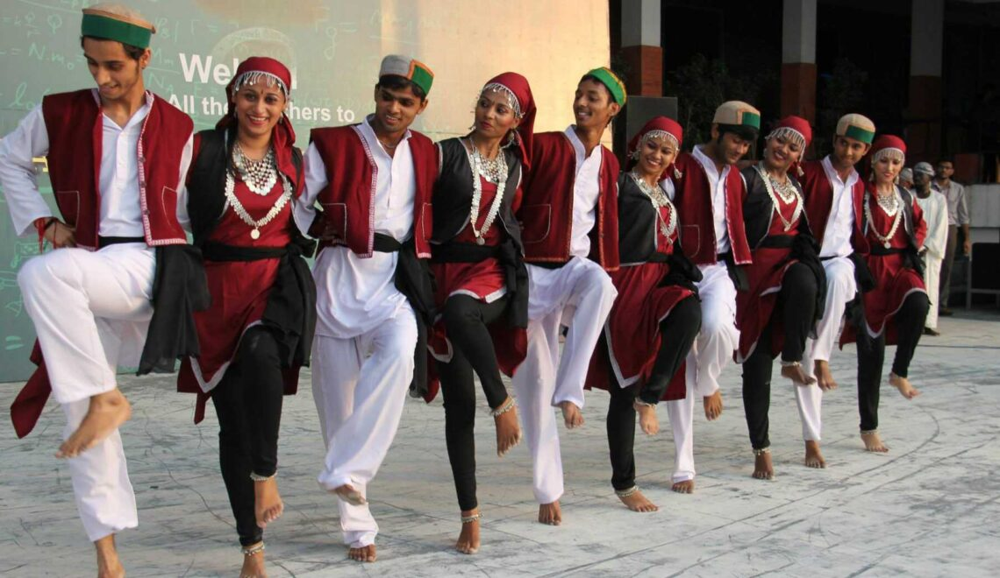
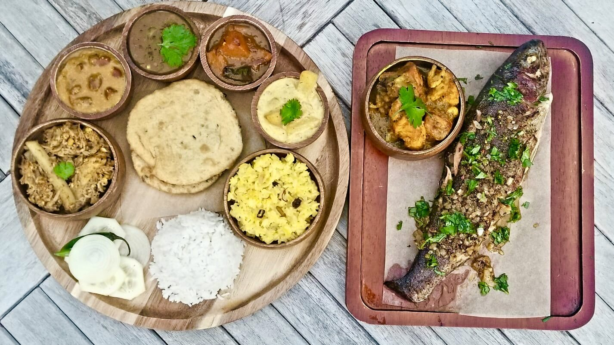
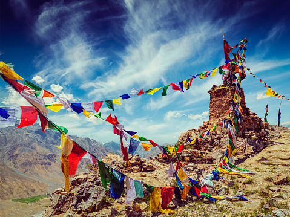

| ✧ Aspect | Information |
|---|---|
| ✧ Capital | Shimla |
| ✧ Chief minister | Jai Ram Thakur |
| ✧ Largest City | Shimla |
| ✧ Districts | 12 |
| ✧ Official Language | Hindi |
| ✧ Other Language | Pahari |
| ✧ Population | Approximately 7.4 million |
| ✧ Area | Approximately 55,673 square kilometers |
| ✧ Major Rivers | Beas, Sutlej, Yamuna, Ravi, Chenab |
| ✧ Major Industries | Tourism, agriculture (apple farming is significant), hydroelectric power generation, manufacturing (including pharmaceuticals and textiles) |
| ✧ Popular Place | Kinnaur,Shimla,Manali,Dharamshala and McLeod Ganj,Kullu Valley,Spiti Valley |
The traditional dress for women is the Ghagra Choli, which is a long skirt and a blouse. Men wear the Kurta and Churidar, which is a long tunic and tight-fitting pants.
Himachal Pradesh, nestled in the lap of the Himalayas, boasts a rich and diverse history that spans millennia. The region's history can be traced back to ancient times when it was inhabited by various indigenous tribes such as the Kols, Kinnars, Kirats, and Lahuls. These tribes lived in harmony with nature, practicing agriculture, animal husbandry, and trade along the ancient routes that passed through the region.
During the ancient period, Himachal Pradesh came under the influence of various empires and dynasties such as the Mauryas, Guptas, Kushans, and later, the Rajputs. However, it was during the medieval period that the region witnessed significant political developments with the establishment of several small princely states. The most prominent among them were the kingdoms of Kangra, Chamba, Mandi, Bilaspur, and Sirmaur, each ruled by its own royal family.
In the 19th century, the British gradually extended their influence over the region through treaties and agreements with local rulers. Himachal Pradesh became a part of British India, administered as a series of princely states and provinces. The British introduced modern infrastructure, including roads, railways, and administrative systems, which helped in the region's economic development.
After India gained independence in 1947, the princely states of Himachal Pradesh were integrated into the Indian Union. In 1950, Himachal Pradesh became a centrally administered territory, and efforts were made to promote its socio-economic development. The state of Himachal Pradesh was officially formed on April 15, 1948, with the integration of 31 princely states.
Since then, Himachal Pradesh has made significant progress in various sectors, including agriculture, tourism, and education. The state is known for its picturesque landscapes, cultural heritage, and vibrant festivals. Today, Himachal Pradesh stands as a testament to the resilience and spirit of its people, who have preserved their rich cultural heritage while embracing modernity.

<../ src="../img/hima2.webp" alt="Image 2">

